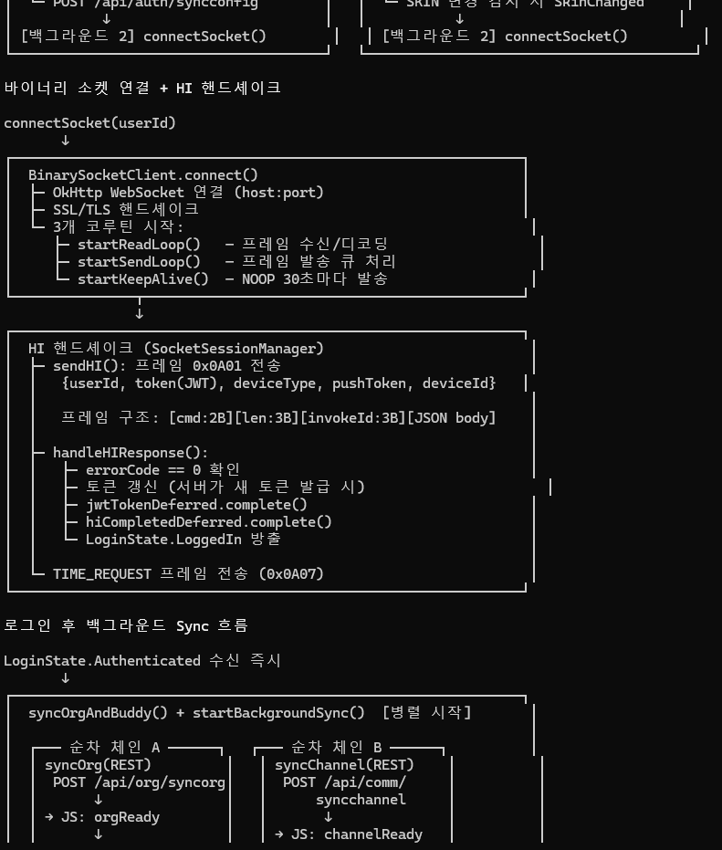
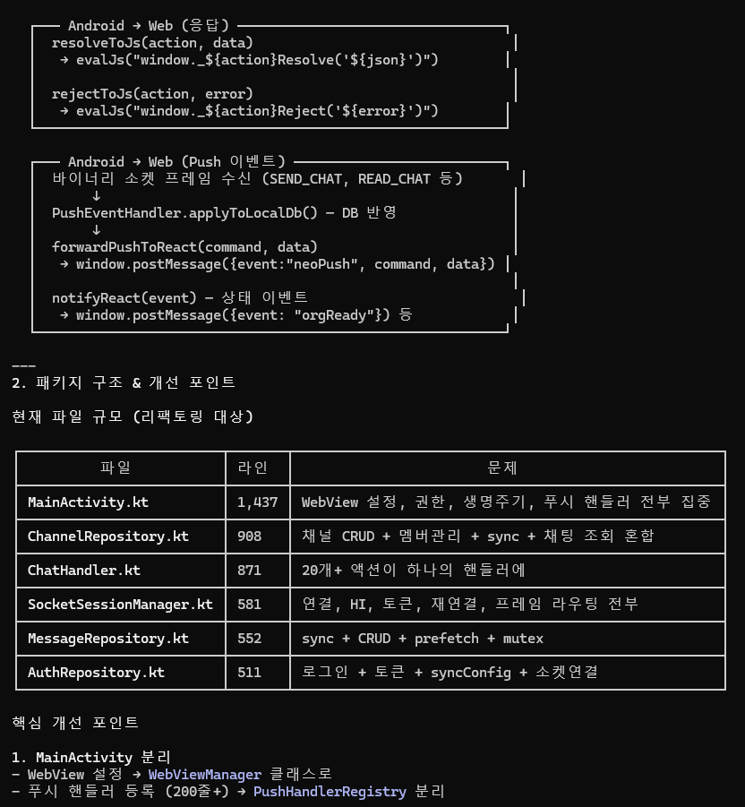
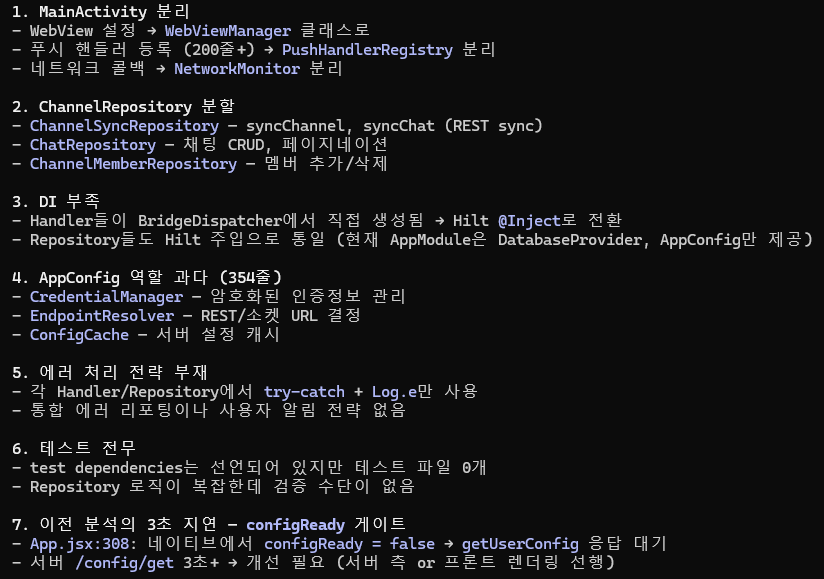

01. 전체 흐름도 & 구조
앱이 실행되는 순간부터 사용자가 로그인해서 메시지를 주고받을 준비가 되기까지의 전체 흐름을, 코드와 원본 다이어그램을 함께 보여드립니다. 패키지 구조와 현재 알려진 개선 포인트도 여기서 정리합니다.
1. 앱 시작 ~ WebView 로드
아래 다이어그램은 HybridWebMessengerApp.onCreate()부터 webView.loadUrl()까지의 순서입니다.
flowchart TD
A["APP START
HybridWebMessengerApp.onCreate()"] A --> A1["Hilt DI 초기화"] A --> A2["SQLCipher passphrase 워밍업
(첫 DB 접근 지연 방지)"] A --> A3["FCM 토큰 사전 조회"] A --> B["MainActivity.onCreate()"] B --> B1["WebView 초기화
(JS enabled, DOM storage)"] B --> B2["BridgeDispatcher 생성
(8개 Handler + Repository 주입)"] B --> B3["WebAppBridge 등록
@JavascriptInterface"] B --> B4["LoginViewModel Flow 구독"] B --> C["startProcess()"] C --> C1{"저장된
refreshToken + userId
있음?"} C1 -->|Yes| C2["loginViewModel.reconnect(userId)
(비동기 선행)"] C1 -->|No| C3["SPA 로드만 진행"] C2 --> D["webView.loadUrl(spaUrl)
WebView 로드 (병렬)"] C3 --> D
HybridWebMessengerApp.onCreate()"] A --> A1["Hilt DI 초기화"] A --> A2["SQLCipher passphrase 워밍업
(첫 DB 접근 지연 방지)"] A --> A3["FCM 토큰 사전 조회"] A --> B["MainActivity.onCreate()"] B --> B1["WebView 초기화
(JS enabled, DOM storage)"] B --> B2["BridgeDispatcher 생성
(8개 Handler + Repository 주입)"] B --> B3["WebAppBridge 등록
@JavascriptInterface"] B --> B4["LoginViewModel Flow 구독"] B --> C["startProcess()"] C --> C1{"저장된
refreshToken + userId
있음?"} C1 -->|Yes| C2["loginViewModel.reconnect(userId)
(비동기 선행)"] C1 -->|No| C3["SPA 로드만 진행"] C2 --> D["webView.loadUrl(spaUrl)
WebView 로드 (병렬)"] C3 --> D
관련 코드 포인트
@HiltAndroidApp
class HybridWebMessengerApp : Application() {
@Inject lateinit var databaseProvider: DatabaseProvider
@Inject lateinit var appConfig: AppConfig
override fun onCreate() {
super.onCreate()
// SQLCipher passphrase 사전 계산
CoroutineScope(Dispatchers.IO).launch {
databaseProvider.warmUpPassphrase()
}
// FCM 토큰 사전 조회
HybridWebMessengerFirebaseMessagingService.getToken(this) { token, _ -> }
}
}
2. 로그인 이후의 세션 초기화
로그인 성공 즉시 LoginState.Authenticated가 방출됩니다. 소켓 연결을 기다리지 않고 즉시 UI를 그리기 시작하는 것이 핵심. 이후 백그라운드에서 다음이 병렬로 진행됩니다.
- syncConfig —
POST /api/auth/syncconfig→ 서버 엔드포인트 매핑 + 테마/스킨 적용 - connectSocket — Binary WebSocket 연결 + HI 핸드셰이크
왜 소켓을 기다리지 않는가?
소켓 HI 핸드셰이크는 네트워크 상황에 따라 수 초 걸릴 수 있습니다. UI가 이를 기다리면 로그인 직후 화면이 멈춰 보입니다. 실제로는 REST로 대부분의 초기 데이터를 가져올 수 있고, 소켓은 Push 이벤트 수신용에 가깝기 때문에 분리되어 있습니다.
소켓 HI 핸드셰이크는 네트워크 상황에 따라 수 초 걸릴 수 있습니다. UI가 이를 기다리면 로그인 직후 화면이 멈춰 보입니다. 실제로는 REST로 대부분의 초기 데이터를 가져올 수 있고, 소켓은 Push 이벤트 수신용에 가깝기 때문에 분리되어 있습니다.
3. Binary 소켓 연결 + HI 핸드셰이크

sequenceDiagram
participant M as SocketSessionManager
participant C as BinarySocketClient
participant S as NEO Server
M->>C: connect(host, port)
C->>S: TLS handshake
C->>S: WebSocket open
Note over C: 3 coroutines 시작
readLoop / sendLoop / keepAlive M->>S: sendHI() — 0x0A01
{userId, token(JWT), deviceType, pushToken, deviceId} S-->>M: HI 응답 {errorCode:0, sessionKey, userInfo, nick, config} M->>M: handleHIResponse()
jwtTokenDeferred.complete()
hiCompletedDeferred.complete() M->>S: TIME_REQUEST (0x0A07) Note over M: LoginState.LoggedIn 방출 (UI 진입 허용)
readLoop / sendLoop / keepAlive M->>S: sendHI() — 0x0A01
{userId, token(JWT), deviceType, pushToken, deviceId} S-->>M: HI 응답 {errorCode:0, sessionKey, userInfo, nick, config} M->>M: handleHIResponse()
jwtTokenDeferred.complete()
hiCompletedDeferred.complete() M->>S: TIME_REQUEST (0x0A07) Note over M: LoginState.LoggedIn 방출 (UI 진입 허용)
프레임 구조: [cmd:2B][len:3B][invokeId:3B][JSON body UTF-8]
4. 로그인 후 백그라운드 Sync 병렬 흐름
세션이 열리면 여러 도메인 데이터를 서로 독립적으로(체인끼리는 순차) 동시 당깁니다. 체인 A/B는 순차(앞이 끝나면 뒤), C/D/E는 독립입니다.
flowchart LR
subgraph A["체인 A (순차)"]
A1["syncOrg
POST /api/org/syncorg"] A2["syncBuddy
POST /api/buddy/syncbuddy"] A3["autoSubscribeUsers
(Binary SUBSCRIBE)"] A1 -->|orgReady| A2 A2 -->|buddyReady| A3 end subgraph B["체인 B (순차)"] B1["syncChannel
POST /api/comm/syncchannel"] B2["syncChat
POST /api/comm/syncchat"] B1 -->|channelReady| B2 B2 -->|chatReady| B3["완료"] end subgraph C["독립 C"] C1["syncMessage
POST /api/comm/syncmessage"] C1 -->|messageReady| C2[" "] end subgraph D["독립 D"] D1["syncNoti
POST /api/noti/syncnoti"] D1 -->|notiReady| D2[" "] end subgraph E["독립 E (선택)"] E1["syncProject / syncIssue / syncThread"] end
POST /api/org/syncorg"] A2["syncBuddy
POST /api/buddy/syncbuddy"] A3["autoSubscribeUsers
(Binary SUBSCRIBE)"] A1 -->|orgReady| A2 A2 -->|buddyReady| A3 end subgraph B["체인 B (순차)"] B1["syncChannel
POST /api/comm/syncchannel"] B2["syncChat
POST /api/comm/syncchat"] B1 -->|channelReady| B2 B2 -->|chatReady| B3["완료"] end subgraph C["독립 C"] C1["syncMessage
POST /api/comm/syncmessage"] C1 -->|messageReady| C2[" "] end subgraph D["독립 D"] D1["syncNoti
POST /api/noti/syncnoti"] D1 -->|notiReady| D2[" "] end subgraph E["독립 E (선택)"] E1["syncProject / syncIssue / syncThread"] end

xxxReady 이벤트 전송각 sync 단계가 끝날 때 React SPA에 상태 이벤트를 발신합니다:
// Web 측 수신
window.addEventListener('message', (e) => {
const msg = JSON.parse(e.data);
if (msg.event === 'orgReady') {/* 조직도 렌더 */}
if (msg.event === 'buddyReady') {/* 버디 목록 */}
if (msg.event === 'channelReady') {/* 채널 목록 */}
// ...
});5. Bridge 통신 흐름 (실시간)

sequenceDiagram
participant JS as React SPA
participant B as WebAppBridge
participant D as BridgeDispatcher
participant H as Handler
participant R as Repository
participant API as REST/Socket
JS->>B: AndroidBridge.postMessage({action, ...params})
B->>B: JSON 파싱
B->>D: dispatch(action, params)
D->>H: handler.handleXxx(params) (when문 라우팅)
H->>R: repository.xxxOperation()
R->>API: REST 호출 또는 Socket 프레임
API-->>R: 응답
R-->>H: 결과
H->>JS: resolveToJs("xxx", json)
→ evalJs("window._xxxResolve('{json}')") Note over JS,API: Push 이벤트의 경우 API-->>R: Binary Push 프레임 (invokeId=0) R->>R: PushEventHandler.applyToLocalDb() R->>JS: window.postMessage({event:"neoPush", command, data})
→ evalJs("window._xxxResolve('{json}')") Note over JS,API: Push 이벤트의 경우 API-->>R: Binary Push 프레임 (invokeId=0) R->>R: PushEventHandler.applyToLocalDb() R->>JS: window.postMessage({event:"neoPush", command, data})
6. 패키지 구조
현재 파일 구성
net.spacenx.messenger/
├─ HybridWebMessengerApp.kt @HiltAndroidApp
├─ common/
│ ├─ AppConfig.kt 354줄 — 설정·자격증명·엔드포인트 관리 (리팩 대상)
│ ├─ Constants.kt 메시지 타입 등
│ └─ JsEscapeUtil.kt JS string escape
├─ data/
│ ├─ local/
│ │ ├─ DatabaseProvider.kt 6 DB 생성/open (SQLCipher passphrase 주입)
│ │ ├─ CommonDatabase.kt @Database common.db
│ │ ├─ OrgDatabase.kt org.db
│ │ ├─ ChatDatabase.kt chat.db
│ │ ├─ MessageDatabase.kt message.db
│ │ ├─ NotiDatabase.kt noti.db
│ │ ├─ SettingDatabase.kt setting.db
│ │ ├─ ProjectDatabase.kt project.db
│ │ ├─ dao/ 13 DAO 인터페이스
│ │ └─ entity/ 24 Entity
│ ├─ remote/
│ │ ├─ api/ 7 Retrofit 인터페이스 + ApiClient
│ │ └─ socket/ BinarySocketClient + Codec + ProtocolCommand
│ └─ repository/
│ ├─ AuthRepository.kt (511)
│ ├─ BuddyRepository.kt
│ ├─ ChannelRepository.kt (908)
│ ├─ MessageRepository.kt (552)
│ ├─ NotiRepository.kt
│ ├─ OrgRepository.kt
│ ├─ ProjectRepository.kt
│ ├─ PubSubRepository.kt
│ ├─ StatusRepository.kt
│ ├─ SocketSessionManager.kt (581)
│ ├─ PushEventHandler.kt
│ └─ UserNameCache.kt
├─ di/
│ └─ AppModule.kt Hilt @Provides — 모든 Singleton
├─ service/
│ ├─ SessionService.kt 전경 서비스 (앱 종료 후에도 세션 유지 시도)
│ ├─ SyncService.kt 주기적 sync
│ └─ push/ FCM + 그룹 알림
├─ ui/
│ ├─ MainActivity.kt (1,437 — 리팩 대상)
│ ├─ LoginActivity.kt
│ ├─ viewmodel/
│ │ ├─ LoginViewModel.kt @HiltViewModel
│ │ └─ MainViewModel.kt
│ ├─ bridge/
│ │ ├─ WebAppBridge.kt @JavascriptInterface
│ │ ├─ BridgeDispatcher.kt when(action) 라우팅
│ │ ├─ BridgeContext.kt 핸들러 공통 인터페이스
│ │ └─ handler/ 8 Handler
│ └─ call/ LiveKit 오버레이
└─ util/ WebFileManager 등아키텍처 의도 vs 현실
원래 Clean Architecture로 패키지 구조를 잡았지만 실제 구현은 MVVM에 가깝게 수렴했습니다:
| 레이어 | 원래 Clean | 현재 상태 |
|---|---|---|
| Presentation | Activity/Fragment + ViewModel | Activity + WebView + Hilt ViewModel ✅ |
| Domain | UseCase 계층 | 없음. Repository가 직접 Handler/ViewModel에 주입 |
| Data | Repository + DataSource (Local/Remote) | Repository에 두 소스가 직접 주입됨 (DAO + ApiClient + SocketManager) |
개선 포인트 요약 (원본 이미지 d/e 기반)
- MainActivity 분리 —
WebViewManager/PushHandlerRegistry/NetworkMonitor로 책임 분할 - ChannelRepository 분할 —
ChannelSyncRepository/ChatRepository/ChannelMemberRepository - DI 부족 — 현재 Handler들이 BridgeDispatcher에서 직접 new. Hilt
@Inject로 전환 필요 - AppConfig 과다 (354줄) —
CredentialManager/EndpointResolver/ConfigCache로 책임 분리 - 에러 처리 전략 부재 — 각 Handler/Repository에서
try-catch + Log.e만 사용. 통합 에러 리포팅 없음 - 테스트 전무 — test dependencies 선언만 있고 실제 테스트 파일 0개
- configReady 3초 지연 — 네이티브에서
configReady=false→ 서버/config/get3초+ 대기. 개선 필요
